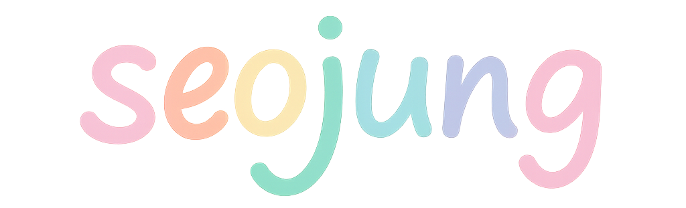

☰
Me
Webページ
illustrate
photoshop
📞
📱 070-8454-5098
日本のドラマ『花より男子』をきっかけに日本文化に興味を持ち、そこから少しずつ日本語の勉強を始めました。
創作することが好きです。
デザインやパン作り、ブログ投稿など、さまざまな形で表現することを楽しんでいます。
音楽を聴くことが好きです。特に好きなアーティストは Keshi で、
彼の音楽は感性を豊かにしてくれると同時に、ストレス解消にもなります。
最近、特にハマっている曲を紹介します。
メロディーを聴くだけで、心がじんわりと満たされるような感覚になります。🩷